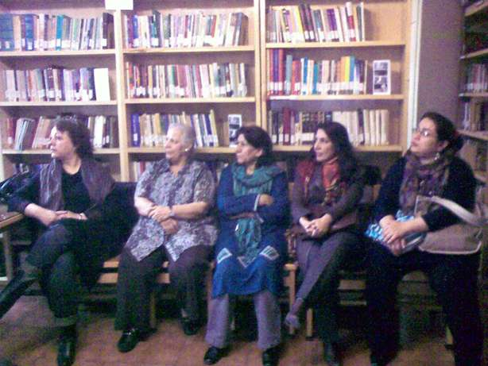
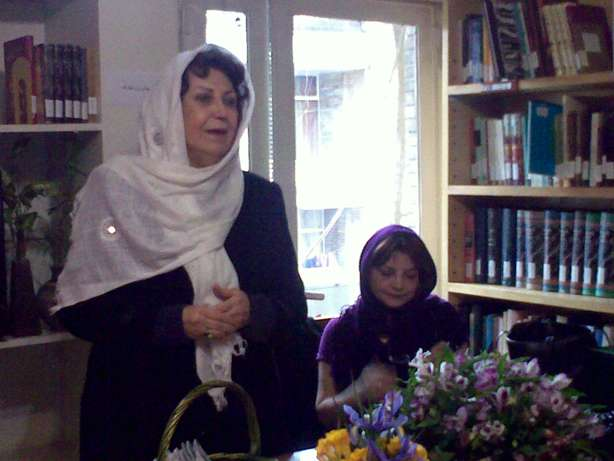
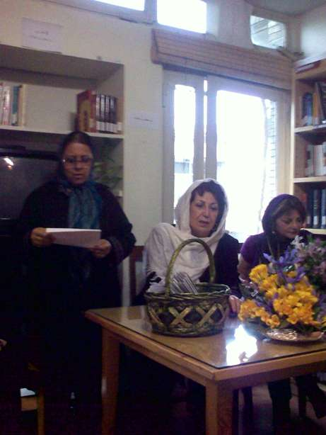
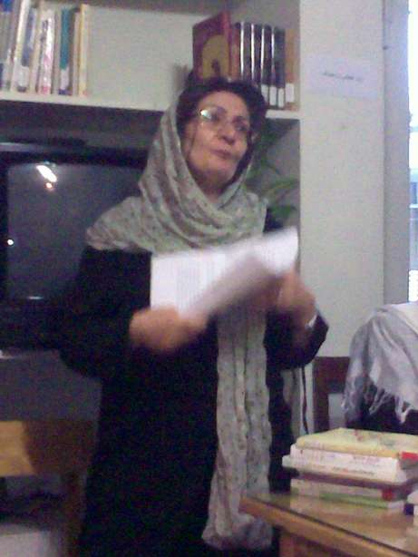

|
|
هفتمين دوره اهدا تندیس صدیقه دولت آبادی در حوزه مطالعات زنان
چهار شنبه25 اسفند 1389
تغییر برای برابری : هفتمين دوره جایزه کتاب "صدیقه دولت آبادی" درمحل کتابخانه صدیقه دولت آبادی برگزار شد. امسال جايزه برترين كتاب در حوزه مطالعات زنان به كتاب زناني كه زير مغنعه كلاهداري نموده اند تاليف منصوره اتحاديه داده شد
در داوری تندیس 1389 مانند سال های گذشته در ابتدا با مراجعه به منابع مختلف لیست کتاب های مربوط به زنان جمع اوری شد . این لیست در برگیرنده حدود 60 عنوان بود . پس از گزینش اولیه 30 کتاب باقی ماند. کتاب های سال 1388 گستره بزرگی را در بر می گرفتند . از اسیب های اجتماعی ، خشونت ، ادبیات ،تاریخ و مجموعه ای از قوانین .تعدد کتاب ها در سال گذشته و همچنین تنوع عناوین نمایشگر رو اوردن افرادي از گروه های مختلف نگرشهاي متفاوت به حوزه مطالعات زنان بود.
در داوری امسال تغییری جدید صورت گرفت . در كنار داوران اصلی (شهلا اعزازي، نيره توكلي، فرخ قره داغي نسترن موسوي و فيروزه مهاجر)از سه نیروی جوان نیز برای شرکت در گروه دعوت شد . اعضاء جديد مانند دیگر داوران کتاب ها را خوانده ، مورد داوری کتبی قرار دادند و در بحث ها شرکت کردند اما تصمیم گیری نهایی بر عهده 5 داور اصلی بود. مریم میرزا نژاد ، نوشین کشاورزنیا و محبوبه مقدم كمك داوران اين دوره بودند. تغيير در شيوه داوري با هدف آشنايي با نحوه داوري و آموزش داوران جديد براي دوره هاي بعدي صورت گرفت.

مراسم با سخنان شهلا لاهيجي (مدیر انتشارات روشنگران و مطالعات زنان) اغاز شد. خانم لاهيجي ضمن اشاره به مشكلات پيش آمده در طول سال گذشته براي كتابخانه گفتند علي رغم كوچك بودن فضا براي برگزاري مراسم خوشحاليم كه محيطي داريم كه متعلق به خودمان است.

نرگس طيبات بعنوان نماينده كتابخانه گزارشي از نحوه كار، مشكلات و برنامه هاي آتي كتابخانه ارائه داد.

محبوبه مقدم در غياب خانم سيمين بهبهاني با قرائت يكي از بهارانه هاي ايشان فضاي مراسم را تلطيف كرد.

هيئت داوران اين دوره ازنقد كتابهاي بد هم بازنماند. اتفاق نظر در مورد يكي از اين كتابها يعني زن ذليل به حدي بود كه نيره توكلي ديگر داور اين دوره در ادامه مراسم نقدي را با بن مايه طنز ارائه كرد كه لبخند را به لب مدعوين نشاند.
اين کتاب كه توسط فردی دانشگاهی و متخصص در روش تحقیق و دروس جامعه شناسی تالیف شده با نوعی زیرکی سعی در نمایش مردانی دارد که به نوعی به گفتار و تفکر همسران خود احترام گذاشته و از ان جا که در تصمیم گیری ها با همسر خود مشورت می کنند عنوان زن ذلیل به انان داده شده است .
در ادامه مراسم شهلا اعزازي ضمن ارائه گزارشي از نحوه و شاخصهاي داوري در اين دوره، 9 کتاب را به عنوان کتاب های برگزیده سال 88 معرفي كرد. در اين ميان سه کتاب يعني فصل مشترك تبعيض ها ، جامعه شناسی سازمان های غیر دولتی و سیطره جنس با اينكه با معيارهاي دريافت تنديس منطبق نبودند به دليل غنا بخشيدن به كتابهاي موجود مرجع براي استفاده محققان و دانشجويان مطالعات زنان معرفي و به خوانندگان توصيه شد.
خانم اعزازي ضمن اشاره به بزرگترين مشكل تمامي كتابها يعني نبود رویکرد جنسیتی و تحلیل های جنسیتی به نمايندگي از طرف هيئت داوران كتابهاي زير را با ذكر نكات قوت بعنوان نامزد دريافت تنديس صديقه دولت آبادي معرفي كردند.
كتابهاي مدیریت زنان و هم چنین مشارکت سیاسی زنان از لحاظ انجام پژوهش به عنوان راهنمایی برای دانشجویان جهت انجام کار های پژوهشی مناسب هستند .
کتاب ریشه های زن ستیزی در بر گیرنده نگاهی به دیدگاه زن ستیزی و در مواردی زن ستایی در ادبیات ایران است . کتاب در بر گیرنده مجموعه مقالاتی است که نویسنده در مورد ادبیات تالیف کرده است .
کتاب های تاریخ خانم ها و زنانی که زیر مقتعه کلاهداری نموده اند به بررسی وضعیت زنان در دوران گذشته و هم چنین زندگینامه یک زن در دوره قاجار مي پردازند . این دو کتاب هر دو در مورد ایران و زنان ایرانی قابل اهميت هستند . همین طور می توان از کتاب پیوند های عاطفی به عنوان تاریخ شفاهی زنان ایران در دوره پهلوی و اوایل انقلاب نام برد . کتاب پایان نامه ای است در يكي از دانشگاههاي امریکا و در بر گیرنده پبوند های عاطفی زنانی است که در زمان مصاحبه در سنین 35 سال به بالا بودند . این کتاب نشانگر نوع روابط دختران با والدین و سپس همسر و فرزندان خود است . هر شش کتاب به عنوان برگزیده انتخاب شدند و برای مطالعه توصیه می شوند
در نهايت جایزه تندیس این دوره کتابخانه صدیقه دولت ابادی به خانم دکتر منصوره اتحادیه به پاس کلیه زحمات ایشان و به علت انتشار کتاب زنانی که زیر مقنعه کلاهداری کردند تعلق گرفت. پريا ميرحاج بعنوان نماينده ايشان و بدليل حضور خانم اتحاديه در سفر تنديس را دريافت كرد.
اگاهی دهندگی در مورد زنان در دوران گذشته و تاکید بر زندگی زنانی که هر چند در جنبش های زنان دخالت نداشتند اما در زندگی خود فعال بودند ،ارائه اطلاعاتی در مورد چگونگی زندگی زنان مانند ازدواج ها ، فرزندان و مسایل زندگی انان ، ارائه گوشه ای از تاریخ دوران قبل از دید زنان ،ارائه زندگی زنان در تاریخ به جای تاکید بر زندگی نامه مردان از جمله دلايل انتخاب اين كتاب بود.
در انتهاي مراسم خانم شيوا دولت آبادي عضو هيئت امنا در سخناني كوتاه گفتند من بارها درباره عمه خانم(صديقه دولت ابادي) خاطراتي را گفته ام اما اين كتابخانه متعلق به تمام بانيان و كساني است كه فكر تاسيس اين محل و اين جايزه را داشته اند و همچنين به تمام كساني كه از اين كتابخانه استفاده مي كنند برخي از حضار نيز درخصوص بازتاب اهدا اين جايزه و تاثير آن بر دانشگاه و حوزه نشر آثار مرتبط با زنان سخن گفتند و پيشنهادات خود را مطرح كردند.